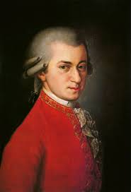

Wolfgang Amadeus Mozart kam am 27. Jänner 1756 um acht Uhr abends in Salzburg in der Getreidegasse 9 in einer Dreizimmerwohnung eines Mehrfamilienhauses (Hagenauerhaus) auf die Welt und wurde am nächsten Vormittag um zehn Uhr im Salzburger Dom von Stadtkaplan Leopold Lamprecht auf die Namen Joannes Chrysostomus Wolfgangus Theophilus getauft und so im Taufbuch eingetragen (sein Vater Leopold Mozart verwendete die Namensform Joannes Chrisostomus Wolfgang Gottlieb).[4] Er wurde Wolferl, Wolfgang oder auch Woferl gerufen.[5] Das Wolferl war das siebte Kind seiner Eltern, aber erst das zweite, das überlebte. Seine Geschwister hießen Johannes Leopold Joachim (* 1748, starb im sechsten Lebensmonat), Maria Anna Cordula (* 1749, wurde sechs Tage alt), Maria Anna Nepomucena Walburga (* 1750, starb im dritten Lebensmonat), Maria Anna Walburga Ignatia – das Nannerl (* 1751, wurde 78 Jahre alt), Johann Baptist Karl Amadeus (* 1752, wurde nicht ganz drei Monate alt) und Maria Crescentia Franziska de Paula (* 1754, starb im zweiten Lebensmonat). Sein Vater war der aus Augsburg zum Studium[6] an der Benediktineruniversität (1622–1810)[7] nach Salzburg gezogene, fürstbischöfliche Kammermusikus (ab 1757 Hofkomponist und ab 1763 Vizekapellmeister) Leopold Mozart, seine Mutter die in Sankt Gilgen aufgewachsene Anna Maria Pertl.